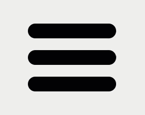

HTML الأصلي الوارد في السؤال
<div class="menu">
<span></span>
<span></span>
<span></span>
</div>ELZERO · CSS ASSIGNMENT 05
المطلوب والحل والفكرة ومعاني الرموز وشرح الأسطر في صفحة مستقلة.
<div class="menu">
<span></span>
<span></span>
<span></span>
</div>المطلوب — تحدي حوّل الخطوط الثلاثة إلى أيقونة قائمة متحركة كما في المرجع، مع عدم تعديل HTML.

تستخدم المقارنة البنية الواردة في السؤال أو معاينة المجموعة المحفوظة. راجع نص المطلوب للتحقق من القيم المحددة.
CSS
body {
min-height: 100vh;
margin: 0;
display: grid;
place-items: center;
background: #eee;
}
.menu {
position: relative;
width: 180px;
height: 138px;
cursor: pointer;
}
.menu span {
position: absolute;
left: 0;
width: 180px;
height: 30px;
border-radius: 20px;
background: #000;
transition: top 0.4s ease, transform 0.4s ease, background-color 0.4s ease, opacity 0.3s ease;
}
.menu span:nth-child(1) {
top: 0;
}
.menu span:nth-child(2) {
top: 54px;
}
.menu span:nth-child(3) {
top: 108px;
}
.menu:hover span:nth-child(1) {
top: 54px;
transform: rotate(45deg);
background: #f00;
}
.menu:hover span:nth-child(2) {
opacity: 0;
transform: scaleX(0);
}
.menu:hover span:nth-child(3) {
top: 54px;
transform: rotate(-45deg);
background: #f00;
}المحدد :hover (حالة مرور المؤشر) يغيّر ترتيب الخطين الخارجيين ويديرهما، بينما يخفي الخط الأوسط. وتنعّم transition (انتقال الحركة) التبديل بين شكل القائمة وعلامة X الحمراء.
bodyيحدد العنصر الذي ستطبق عليه قواعد CSS.
.menuيستهدف العناصر التي تحمل اسم الصنف المحدد.
.menu spanيستهدف العناصر التي تحمل اسم الصنف المحدد.
.menu span:nth-child(1)يختار عنصرًا بحسب ترتيبه أو علاقته بإخوته.
.menu span:nth-child(2)يختار عنصرًا بحسب ترتيبه أو علاقته بإخوته.
.menu span:nth-child(3)يختار عنصرًا بحسب ترتيبه أو علاقته بإخوته.
.menu:hover span:nth-child(1)يطبق القاعدة عند مرور المؤشر فوق العنصر.
.menu:hover span:nth-child(2)يطبق القاعدة عند مرور المؤشر فوق العنصر.
min-heightتحدد أقل ارتفاع. مثال القيمة: 100vh
marginتضيف مسافة خارجية. مثال القيمة: 0
displayتحدد طريقة عرض العنصر. مثال القيمة: grid
place-itemsتختصر محاذاة Grid. مثال القيمة: center
backgroundتضبط الخلفية. مثال القيمة: #eee
positionتحدد طريقة التموضع. مثال القيمة: relative
widthتحدد عرض العنصر. مثال القيمة: 180px
heightتحدد ارتفاع العنصر. مثال القيمة: 138px
cursorتحدد قيمة الخاصية cursor. مثال القيمة: pointer
leftتحدد المسافة من اليسار. مثال القيمة: 0
border-radiusتدوّر زوايا العنصر. مثال القيمة: 20px
transitionتجعل تغير الخاصية تدريجيًا. مثال القيمة: top 0.4s ease, transform 0.4s ease, background-color 0.4s ease, opacity 0.3s ease
topتحدد المسافة من أعلى مرجع التموضع. مثال القيمة: 0
transformتطبق دورانًا أو تحريكًا أو تحجيمًا. مثال القيمة: rotate(45deg)
opacityتحدد شفافية العنصر. مثال القيمة: 0
nth-child()تختار عنصرًا بحسب ترتيبه بين إخوته، ويمكن استخدام صيغة مثل n + 4 لاختيار ما بعد العنصر الثالث.
nth-child()تختار عنصرًا بحسب ترتيبه بين إخوته، ويمكن استخدام صيغة مثل n + 4 لاختيار ما بعد العنصر الثالث.
nth-child()تختار عنصرًا بحسب ترتيبه بين إخوته، ويمكن استخدام صيغة مثل n + 4 لاختيار ما بعد العنصر الثالث.
nth-child()تختار عنصرًا بحسب ترتيبه بين إخوته، ويمكن استخدام صيغة مثل n + 4 لاختيار ما بعد العنصر الثالث.
rotate()تدير العنصر بالزاوية المحددة.
nth-child()تختار عنصرًا بحسب ترتيبه بين إخوته، ويمكن استخدام صيغة مثل n + 4 لاختيار ما بعد العنصر الثالث.
scaleX()تكبر العنصر أو تصغره أفقيًا.
nth-child()تختار عنصرًا بحسب ترتيبه بين إخوته، ويمكن استخدام صيغة مثل n + 4 لاختيار ما بعد العنصر الثالث.
rotate()تدير العنصر بالزاوية المحددة.
vhنسبة من ارتفاع نافذة العرض.
pxوحدة بكسل CSS.
sثانية.
degدرجة زاوية.
{يفتح مجموعة التصريحات.
}يغلق مجموعة التصريحات.
:يفصل الخاصية عن القيمة.
;ينهي تصريح CSS.
,يفصل بين محددات أو قيم.
CSS
body {
min-height: 100vh;
margin: 0;
display: grid;
place-items: center;
background: #eee;
}
.menu {
position: relative;
width: 180px;
height: 138px;
cursor: pointer;
}
.menu span {
position: absolute;
left: 0;
width: 180px;
height: 30px;
border-radius: 20px;
background: #000;
transition: top 0.4s ease, transform 0.4s ease, background-color 0.4s ease, opacity 0.3s ease;
}
.menu span:nth-child(1) {
top: 0;
}
.menu span:nth-child(2) {
top: 54px;
}
.menu span:nth-child(3) {
top: 108px;
}
.menu:hover span:nth-child(1) {
top: 54px;
transform: rotate(45deg);
background: #f00;
}
.menu:hover span:nth-child(2) {
opacity: 0;
transform: scaleX(0);
}
.menu:hover span:nth-child(3) {
top: 54px;
transform: rotate(-45deg);
background: #f00;
}الكود الكامل ثابت في العمود الأيسر أثناء التمرير، وكل سطر مشروح على حدة.
body {يحدد العنصر الذي ستطبق عليه قواعد CSS.
min-height: 100vh;تحدد أقل ارتفاع. والقيمة هنا 100vh.
margin: 0;تضيف مسافة خارجية. والقيمة هنا 0.
display: grid;تحدد طريقة عرض العنصر. والقيمة هنا grid.
place-items: center;تختصر محاذاة Grid. والقيمة هنا center.
background: #eee;تضبط الخلفية. والقيمة هنا #eee.
}يغلق نطاق القاعدة التي بدأها المحدد.
.menu {يستهدف العناصر التي تحمل اسم الصنف المحدد.
position: relative;تحدد طريقة التموضع. والقيمة هنا relative.
width: 180px;تحدد عرض العنصر. والقيمة هنا 180px.
height: 138px;تحدد ارتفاع العنصر. والقيمة هنا 138px.
cursor: pointer;تحدد قيمة الخاصية cursor. والقيمة هنا pointer.
}يغلق نطاق القاعدة التي بدأها المحدد.
.menu span {يستهدف العناصر التي تحمل اسم الصنف المحدد.
position: absolute;تحدد طريقة التموضع. والقيمة هنا absolute.
left: 0;تحدد المسافة من اليسار. والقيمة هنا 0.
width: 180px;تحدد عرض العنصر. والقيمة هنا 180px.
height: 30px;تحدد ارتفاع العنصر. والقيمة هنا 30px.
border-radius: 20px;تدوّر زوايا العنصر. والقيمة هنا 20px.
background: #000;تضبط الخلفية. والقيمة هنا #000.
transition: top 0.4s ease, transform 0.4s ease, background-color 0.4s ease, opacity 0.3s ease;تجعل تغير الخاصية تدريجيًا. والقيمة هنا top 0.4s ease, transform 0.4s ease, background-color 0.4s ease, opacity 0.3s ease.
}يغلق نطاق القاعدة التي بدأها المحدد.
.menu span:nth-child(1) {يختار عنصرًا بحسب ترتيبه أو علاقته بإخوته.
top: 0;تحدد المسافة من أعلى مرجع التموضع. والقيمة هنا 0.
}يغلق نطاق القاعدة التي بدأها المحدد.
.menu span:nth-child(2) {يختار عنصرًا بحسب ترتيبه أو علاقته بإخوته.
top: 54px;تحدد المسافة من أعلى مرجع التموضع. والقيمة هنا 54px.
}يغلق نطاق القاعدة التي بدأها المحدد.
.menu span:nth-child(3) {يختار عنصرًا بحسب ترتيبه أو علاقته بإخوته.
top: 108px;تحدد المسافة من أعلى مرجع التموضع. والقيمة هنا 108px.
}يغلق نطاق القاعدة التي بدأها المحدد.
.menu:hover span:nth-child(1) {يطبق القاعدة عند مرور المؤشر فوق العنصر.
top: 54px;تحدد المسافة من أعلى مرجع التموضع. والقيمة هنا 54px.
transform: rotate(45deg);تطبق دورانًا أو تحريكًا أو تحجيمًا. والقيمة هنا rotate(45deg).
background: #f00;تضبط الخلفية. والقيمة هنا #f00.
}يغلق نطاق القاعدة التي بدأها المحدد.
.menu:hover span:nth-child(2) {يطبق القاعدة عند مرور المؤشر فوق العنصر.
opacity: 0;تحدد شفافية العنصر. والقيمة هنا 0.
transform: scaleX(0);تطبق دورانًا أو تحريكًا أو تحجيمًا. والقيمة هنا scaleX(0).
}يغلق نطاق القاعدة التي بدأها المحدد.
.menu:hover span:nth-child(3) {يطبق القاعدة عند مرور المؤشر فوق العنصر.
top: 54px;تحدد المسافة من أعلى مرجع التموضع. والقيمة هنا 54px.
transform: rotate(-45deg);تطبق دورانًا أو تحريكًا أو تحجيمًا. والقيمة هنا rotate(-45deg).
background: #f00;تضبط الخلفية. والقيمة هنا #f00.
}يغلق نطاق القاعدة التي بدأها المحدد.